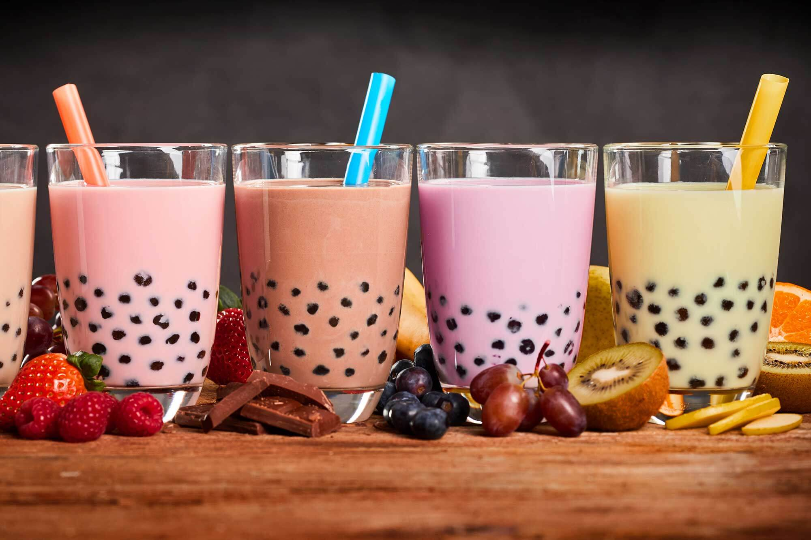

|
|
|
In JMSS, Australia, and beyond.
Have you ever seen just how many students walk around John Monash Science School with energy drinks in their hands? Or students who will show up to period one with a mug of coffee or tea? Our team sought to collate the data regarding this excessive caffeine consumption at JMSS, to compare it to national averages, and inform viewers like you about our community’s caffeine habits, and the adverse effects, both good and bad, that they can have on our lives.
Our website contains information regarding caffeine consumption at John Monash Science School collected directly by our team, as well as secondary statistics regarding wider caffeine intake across Victoria and Australia, and the health effects of long term caffeine consumption.
Caffeine addictions can be debilitating. Visit Lifeline's Substance Abuse webpage for more information and help.
Our original intentions for this project were to gather data from teachers and students about their caffeine intake, including the following; What types of drinks they consume How often they consume caffeinated drinks The effects that caffeine has on their everyday life.
These questions were asked throughout our survey, which can be seen here.
Unfortunately, due to few responses from teachers, we chose to exclude this data, and only present the data we collected from students.
The first section of questions in our survey regarded what types of caffeinated drinks that students consume. From what we have seen at JMSS, our group expected the most consumed drink to be energy drinks, followed by tea, and lastly coffee. However this was very different from the data that we gathered in our survey, which showed tea to be most popular, followed by coffee, and finally energy drinks. This is interesting, that despite what we observed, energy drinks were the least consumed. This has skewed our perceptions and as such we were surprised with the results from the data.
Another aspect of our survey was asking students about how caffeine affects their sleep, and cognitive function. Our research showed that caffeine intake correlates with lower perceptions of sleep quality, which is what our group expected going into this study. Our study also found that caffeine was linked to perceived increases in cognitive performance, which was surprising for us, as we expected little to no correlation between caffeine consumption and cognitive function.
